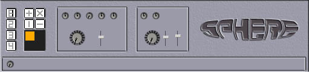

eleKtroniKa
help file
sphere module
deformation,
and onsound deformation

inputs/outputs
4 video in
1 audio in
1 video out
usage
sphere module is composed of five elementary zone,
the source selection, the mirror effects, the manual deformation and on sound
deformation aera.
SOURCE SELECTION
buttons [1/2/3/4], select the video source
MIRROR EFFECTS
the 4 buttons select the type of mirror
double mirrors: horizontal or vertical
quad mirror: you can select the symetry using the horizontal/vertical button
and select the zone with the orange zone selection
kaleïdoscope: 8 parts and others function working as the quad mirror
functions.
MANUAL DEFORMATIONS
punch/pinch, twirl, splash, rotation and zoom.
the level button give the power of the effect and the trigger the operation
mode sub/normal/add
ONSOUND DEFORMATIONS
button bass and medium level
and sames as manual deformation a level button and a trigger operation button
there is also a type of sound deformation trigger.
copyright aestesis
2003
www.aestesis.org